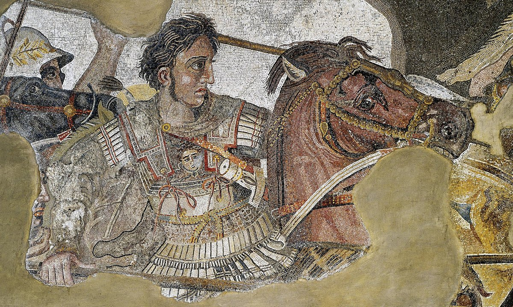
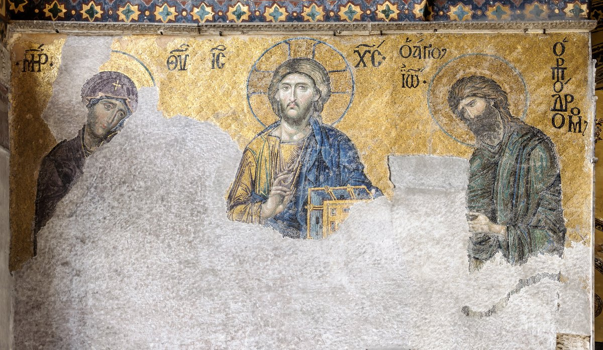

How can an image built entirely from small, separate pieces still read as one whole picture?
You already know that every digital image is a grid of pixels (Module 1). Mosaic art works on the exact same principle, thousands of years before pixels existed: an image built from many small, individual pieces that only resolve into a picture from a distance. This week you study mosaic history and build one yourself, digitally, in Pixlr E.
👀 PART 1 · LOOK FIRST
A mosaic is a picture or pattern made by placing small pieces of colored stone, glass, or tile, called tesserae, next to each other. No piece blends into its neighbor. The image only comes together in your eye. Look at the grid below.
Concept diagram: a 12-by-12 grid of colored squares, each one a separate "tessera," forms a sun shape when viewed as a whole.
💭 QUICK CHECK-IN · NO WRONG ANSWER
Where have you seen mosaic-style art or design, in real life or online?
📚 PART 2 · A BRIEF HISTORY OF MOSAIC
Mosaic is one of the oldest and most durable art forms in the world, because stone and glass tesserae survive centuries that paint does not.
Roman mosaics
Roman artists covered villa floors and public baths with mosaics made of small stone or marble cubes, often depicting myths, hunts, or geometric patterns. Because they were made of durable stone set in mortar, thousands of Roman mosaic floors survive today, giving historians a direct window into Roman daily life and taste.

The Alexander Mosaic, a Roman floor mosaic from the House of the Faun, Pompeii, c. 100 B.C., after a Greek original. Naples National Archaeological Museum. Made of roughly 1.5 million tiny stone tesserae. Public domain. Source: Wikimedia Commons
Byzantine mosaics
In the Byzantine Empire (about 330 to 1453 A.D.), the eastern half of the former Roman Empire, mosaic became a religious art form. Byzantine artists arranged tiny pieces of colored glass and stone, and used gold-backed glass tesserae, to cover the walls and ceilings of churches with images of Christ, the Virgin Mary, and saints. The gold was meant to catch candlelight and glow, suggesting the presence of the divine rather than a realistic scene. Figures in Byzantine mosaics are deliberately flat and stylized, with large eyes and direct gazes, because the goal was spiritual presence, not accuracy. The Hagia Sophia in Constantinople (modern Istanbul) still holds mosaics over a thousand years old.

The Deesis mosaic, Hagia Sophia, Istanbul, 13th century A.D. Christ is flanked by the Virgin Mary and John the Baptist, built from tiny stone and gold-backed glass tesserae. Public domain. Source: Wikimedia Commons
Even where centuries of damage have stripped away entire sections of tesserae down to bare plaster, as in the lower portion of this mosaic, the surviving faces and gold background stay sharp. That durability is the whole reason mosaic was worth the labor.
Mosaic beyond Rome and Byzantium
Mosaic-like technique appears across unconnected cultures. In Mesoamerica, Mixtec and Aztec artisans made turquoise mosaics, carefully shaping and fitting small pieces of turquoise onto wood or stone masks and shields, using natural adhesives instead of mortar. The materials and purpose were different from Rome's, but the underlying idea, an image built from many small fitted pieces, was the same.
💡 WHY TESSERAE INSTEAD OF PAINT
Mortar and mineral tesserae resist water, sunlight, and time far better than paint or dye. This is why mosaic floors, church ceilings, and turquoise masks have survived for centuries or millennia when painted surfaces from the same era have long since faded or crumbled.
🔍 PART 3 · BUILDING A DIGITAL MOSAIC IN PIXLR E
You will translate the mosaic technique into a digital workflow using Pixlr E's shape tools instead of stone. Two approaches work, and you may combine them:
Tile-by-tile with the Shape tool. Use the Shape tool to draw individual squares (or small polygons) across your canvas, filling each one with a color sampled from a reference image or your own palette. This is the closest digital equivalent to placing real tesserae by hand.
Grid overlay with a mosaic-style filter. Bring in a base image, apply a pixelate or mosaic-style adjustment to break it into a visible grid of color blocks, then use the Shape tool to clean up or emphasize edges by hand.
🎨 PLANNING YOUR TILE GRID
Sketch your subject in simple shapes first, the same build-up habit from last week. Decide your grid size before you start placing tiles: a coarser grid (bigger squares) reads more abstract and more like ancient mosaic; a finer grid reads more like a smooth image. Byzantine mosaics deliberately kept faces a little abstract and flat rather than smooth and realistic; you can choose either approach for your own piece.
Keep a visible seam between tiles (a thin gap or outline), the way real grout separates tesserae. Without that seam, the piece just looks like a blurry photo instead of a mosaic.
⚡ TRY IT · MOSAIC HISTORY CHECK
Read each statement and decide if it is true, then check your answer.
Roman and Byzantine mosaics have mostly disappeared because stone and glass tesserae decay quickly.
Byzantine mosaic artists used gold tesserae and flattened, stylized figures on purpose, to suggest the divine rather than to look realistic.
⚠️ WORTH KNOWING · AI MOSAIC FILTERS
Some apps offer a one-click "mosaic filter" that automatically pixelates a photo. That filter can produce a mosaic-looking texture, but it does not make the compositional choices this lesson teaches: your grid scale, your color simplification, and your seams. This week's project asks you to place or plan your tiles deliberately, not just apply a filter.
📝 VOCABULARY
MosaicA picture or pattern made by placing small pieces of colored stone, glass, or tile next to each other.
TesseraeThe small individual pieces used to build a mosaic (singular: tessera).
ByzantineRelated to the Byzantine Empire (about 330 to 1453 A.D.), the eastern half of the former Roman Empire, known for religious mosaic art.
Gold LeafThin sheets of gold used in art, especially behind glass tesserae in Byzantine mosaics, to add shine and suggest the divine.
StylizedArt that is not realistic but uses shapes and features in a decorative or symbolic way.
Turquoise MosaicA Mesoamerican technique of decorating objects using small, shaped pieces of turquoise fitted into patterns.
Grout / SeamThe visible gap or line between tesserae that keeps individual tiles distinct from their neighbors.
PixelateA digital filter that breaks an image into a visible grid of solid color blocks.
➡️ WHAT YOU'LL DO NEXT (IN CANVAS)
1
Reading Check: Mosaic History · Week 2
Short completion check on Roman, Byzantine, and Mesoamerican mosaic.
2
Discussion: Choosing Your Mosaic Subject · Week 2
Share your planned subject and grid scale, and give one classmate feedback.
3
Quiz: Mosaic Art · Week 2
8 questions, auto-graded in Canvas.
4
Project: Digital Mosaic (Part 1) · Weeks 2-3
Begin your digital mosaic in Pixlr E: plan your subject and grid, then place at least half your tiles this week. You will finish and submit it next week.
💪 THE BIG IDEA
Mosaic proves that a picture does not need smooth, continuous marks to read as one image; it needs a plan for how many small, separate pieces will sit together. Roman and Byzantine artists solved this with stone and glass; you are solving the same problem with digital tiles. The grid, not the material, is the idea that survives.
Optima Academy Online · DIGITAL ART IMAGING · Quarter 4 · Student Lesson Page